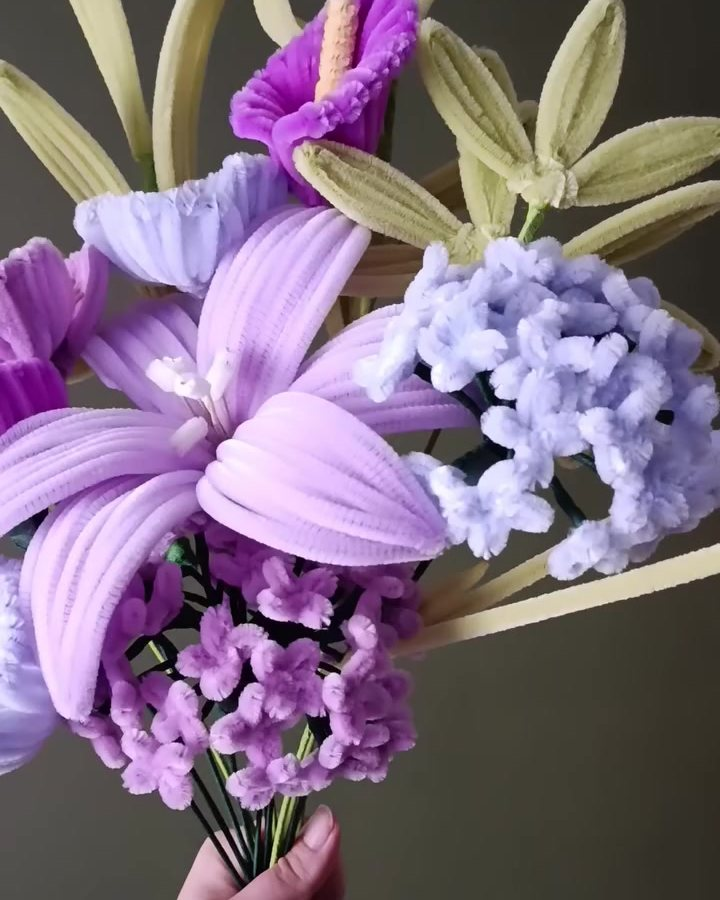

Tout à la main
Chaque fleur est pliée, torsadée et ajustée à la main, dans mon atelier.
Fleurs éternelles en fil chenille · Ardennes
Bouquets et décorations en fleurs éternelles, façonnés à la main dans mon atelier des Ardennes. Des créations sur-mesure pour tous vos évènements et vos cadeaux… ou juste pour le plaisir.

L’atelier
Flore & Chenilles, c’est mon atelier à Signy-l’Abbaye, dans les Ardennes. C’est là que je façonne, avec passion, des bouquets et des décorations en fleurs éternelles : lys, arums, pavots, gerberas, tulipes, hortensias, tournesols…
Tout est fait à la main, fleur après fleur. Je sélectionne mes fils chenille pour leur qualité et leur durabilité, pour que chaque création garde ses couleurs et sa douceur, année après année.
J’imagine aussi des créations sur-mesure pour vos évènements et vos cadeaux, et j’aime chiner en brocante de jolis contenants à fleurir.
Avec douceur, Flore & Chenilles
Chaque fleur est pliée, torsadée et ajustée à la main, dans mon atelier.
Choisis pour leur qualité et leur durabilité, pour des couleurs qui tiennent.
Ni eau ni entretien, et sans pollen : idéal pour les allergiques et les chambres d’enfants.
Vos couleurs, vos fleurs, votre occasion : un bouquet à votre image.
Comment ça se passe ?
Une de mes créations, ou votre propre bouquet, fleur par fleur.
Je confirme avec vous les couleurs, le prix et la date par e-mail.
Votre création prend vie à la main, dans mon atelier des Ardennes.
Retrait à l’atelier ou livraison autour de Signy-l’Abbaye.
Mes créations
Chaque création est faite à la main, sur commande, et emballée dans une pochette transparente fermée d’un nœud. Chaque fleur est à 8 € : le prix d’un bouquet suit son nombre de fleurs.
Ajoutez vos coups de cœur à votre sélection, écrivez votre carte de vœux, puis envoyez-moi votre demande : je vous confirme la date et la remise.

Le prix d’une fleur
Chaque pétale est plié, torsadé et ajusté à la main.
Choisis pour leur qualité et leur durabilité.
Pour que chaque fleur se tienne bien droite.
Pour assembler et habiller la tige.
Pour que chaque détail tienne bien, longtemps.
Pour donner aux pétales leurs douces nuances.
Une pochette transparente, fermée d’un joli nœud.
Chaque fleur est faite avec le cœur.
Et la carte de vœux est offerte, avec le message de votre choix.
Votre bouquet à vous
Choisissez vos fleurs et leurs couleurs, puis écrivez votre carte de vœux : elle est offerte. Je façonne votre bouquet à la main et je l’emballe dans une pochette transparente fermée d’un nœud.
Votre bouquet prendra forme ici…
Ajoutez une première fleur !
Votre petit mot apparaît sur la carte, à côté du bouquet. Tout est facultatif.
8 € par fleur, le feuillage est offert. Le fil chenille peut varier légèrement d’une teinte à l’autre : c’est tout le charme du fait main.
Pour chaque moment
Choisissez une occasion : je vous propose une composition à ajuster à votre goût, ou une création adaptée.
Livraison & retrait
Venez chercher votre création directement à l’atelier, à Signy-l’Abbaye. C’est gratuit.
Livraison : 5 € jusqu’à 15 km, 10 € jusqu’à 25 km autour de Signy-l’Abbaye. Au-delà, on en parle ensemble.
Chaque création est emballée dans une pochette transparente fermée d’un nœud, avec sa carte de vœux personnalisée, offerte.
Mots doux
Sur les réseaux
Nouveautés, coulisses de l’atelier et créations sur-mesure : retrouvez-moi au quotidien.
Questions fréquentes
Une autre question ? Écrivez-moi, j’adore parler fleurs.
M’écrireLe fil chenille, que l’on appelle aussi cure-pipe, est un fil tout doux et légèrement duveteux. Je le plie et le torsade à la main pour former pétales, cœurs et feuillages. Je sélectionne mes fils pour leur qualité et leur durabilité : la fleur garde sa forme et ses couleurs, sans eau ni entretien.
Une fleur à l’unité coûte 8 €. Une fleur, c’est du temps (chaque pétale est façonné à la main), des fils chenille sélectionnés pour leur qualité, une tige de fer, du scotch de masquage, de la colle, du maquillage pour les nuances des pétales et un emballage (une pochette transparente fermée d’un nœud)… et plein d’amour.
Envie d’une surprise ? La fleur mystère est à 6 € : je choisis la fleur et sa couleur pour vous.
Pour un bouquet, c’est simple : 8 € par fleur, le feuillage est offert. Le vase est offert avec les bouquets présentés en vase, et le petit pot avec les petites fleurs en pot. Sur demande, une fleur peut aussi se blottir dans un bocal transparent, pour 5 € de plus : à l’abri de la pluie et du vent, elle fleurit avec douceur la sépulture d’un être cher.
Bien sûr ! Composez votre bouquet fleur par fleur dans « Votre bouquet à vous », ou parlez-moi de vos idées : les couleurs de votre salon, de votre chambre ou de votre mariage, on peut essayer ensemble.
Livraison : 5 € jusqu’à 15 km, 10 € jusqu’à 25 km autour de Signy-l’Abbaye. Au-delà, on en parle ensemble.
Vous pouvez aussi venir chercher gratuitement votre création à l’atelier, à Signy-l’Abbaye.
Toutes mes créations sont emballées dans une pochette transparente, fermée d’un joli nœud. J’y ajoute une carte de vœux, offerte : écrivez votre petit mot au moment de la commande, je le glisse avec votre création.
Oui. Pour honorer la mémoire d’un être cher, je glisse une fleur dans un bocal transparent : à l’abri de la pluie et du vent, elle reste belle au fil des saisons, sans aucun entretien. Le bocal est à 5 € de plus que la fleur. Parlez-moi de vos souhaits, en toute simplicité.
Chaque création est façonnée à la main, à la commande. Le délai dépend de la composition : je vous l’indique en confirmant votre demande. Pour une date précise, prévenez-moi le plus tôt possible.
Avec plaisir : bouquets, centres de table, décorations pour un mariage, un baptême ou un anniversaire… Décrivez-moi votre projet via le formulaire de contact.
Contact
Une commande, un bouquet sur-mesure, un évènement à fleurir ? Laissez-moi un message : je vous réponds avec plaisir.